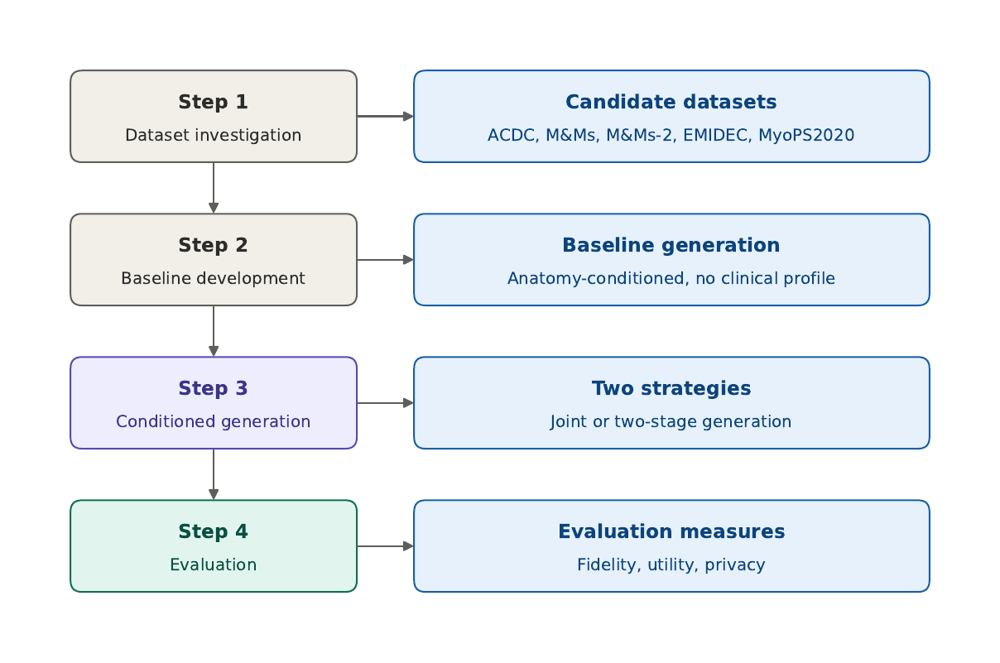
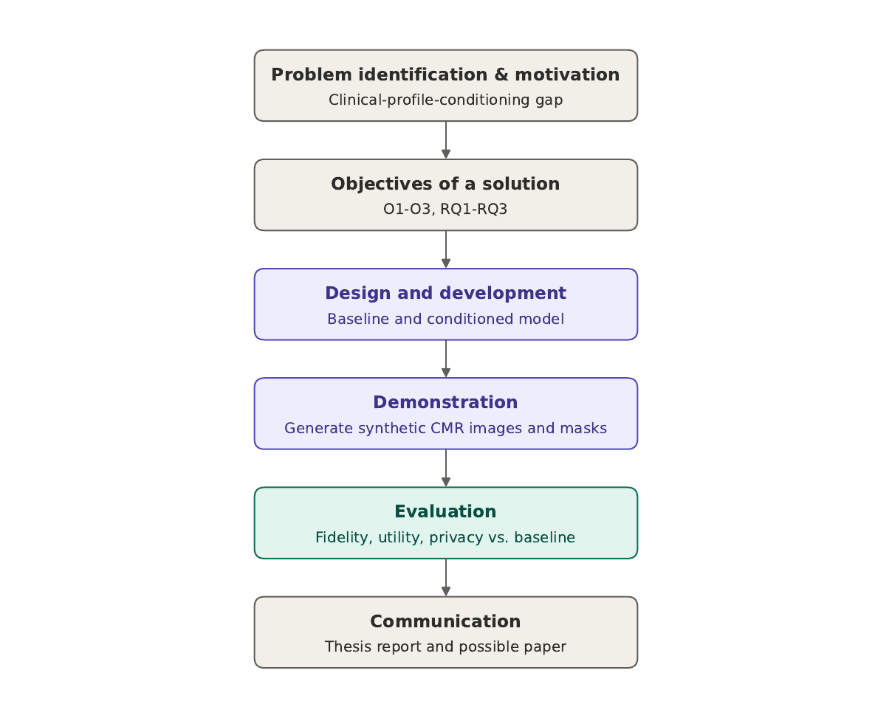
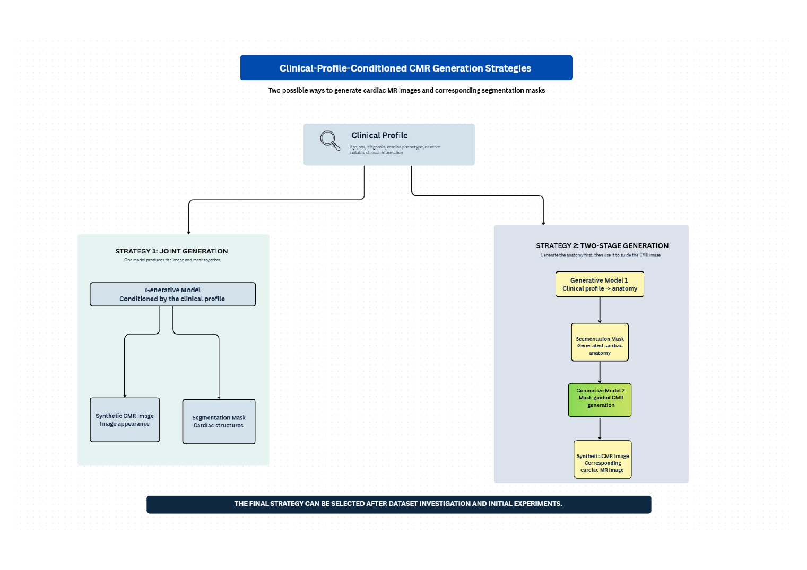
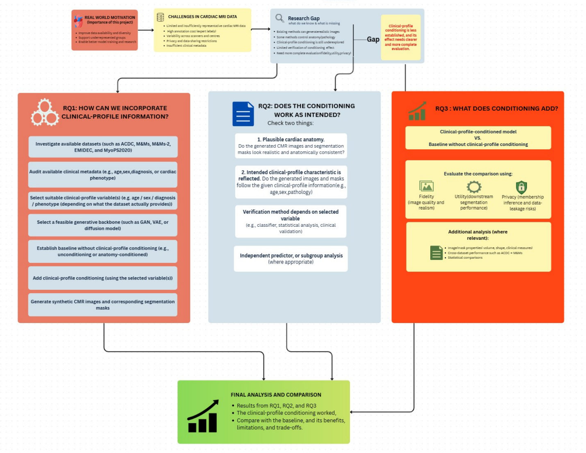

The idea in plain words
Deep learning models for cardiac MRI need a lot of labelled data, and that data is hard to get. Scans differ between scanners and hospitals, expert labelling is slow, and privacy rules limit sharing. Some patient groups and conditions also appear only a handful of times.
Generative models can create extra synthetic scans. Most existing work controls the anatomy of the generated heart, for example with a segmentation mask. This project asks what happens when the generation is controlled by information about the patient, such as diagnosis group, body measurements or other clinical details, so the synthetic data can be shaped towards the groups a dataset is missing.
Objective and research questions
Main objective. Investigate how clinical-profile information can give fine-grained control over the generation of synthetic cardiac MR images together with their segmentation masks.
O1 / RQ1 Build it
Develop a baseline generative model without clinical-profile conditioning, and a conditioned version built on top of it. How can the profile be put into the model?
O2 / RQ2 Check it works
Do the generated images and masks keep plausible anatomy, and do they actually reflect the profile they were conditioned on?
O3 / RQ3 Compare it
How does the conditioned model compare with the baseline on fidelity, downstream utility and privacy?
How it works
The work follows Design Science Research. A baseline pipeline is built first, then the clinical-profile-conditioned approach is added on top of it, so any difference can be traced to the conditioning itself.


Two ways to generate image and mask

How the results will be judged
- Did the conditioning work? Measure the generated masks and images and compare with the values requested.
- Fidelity. How close the synthetic images are to real ones (for example FID, KID, SSIM, LPIPS).
- Utility. Train segmentation models on real, synthetic and combined data and test them on the same real data, including across datasets.
- Privacy. Nearest-neighbour distance and membership-inference tests.

What the literature says so far
A focused review of cardiac MRI generators that use patient-level information found a small, varied set of papers. Each conditions on something different, and few check the result in the same way.
| Paper | Conditions on | Data | Checked? | Main finding | Why it matters here |
|---|---|---|---|---|---|
| Campello et al. 2022 | Age, BMI | UK Biobank; four-chamber, end-diastole, 2D | Conditioning: yes (age and BMI regressor) Privacy: no | Adding 10 to 25% synthetic scans brought age-prediction error close to a balanced dataset. | Template for checking that conditioning worked, using an independent regressor. |
| Skorupko et al. 2025 | Sex, age, BMI, health condition (text) plus masks | UK Biobank | Conditioning: partly Privacy: argued, not tested | Reduced imbalance, for example scarce diagnosed female patients, in a downstream classifier. | Conditions on profile plus mask. You add a direct conditioning check and a privacy test. |
| Li et al. 2025 (CPGG) | Cardiac phenotypes (such as LVEF and LVEDV) | UK Biobank and a private set | Conditioning: not stated Privacy: not stated | Pretraining on the synthetic data improved diagnosis and phenotype prediction. | Shows clinical characteristics can condition cine CMR. |
| Cao et al. 2026 | Diagnosis, chamber volumes, ejection fraction | Trained on ACDC and Data Science Bowl; tested on M&Ms and M&Ms-2 | Conditioning: yes (r 0.66 to 0.94) Privacy: no | FID 72.2. Synthetic data raised cross-vendor Dice by 1.4% and cut Hausdorff distance by 3.0 mm (nnU-Net). | Closest to this thesis. You add a no-conditioning baseline and a privacy test. |
| Rodríguez et al. 2026 | Structured metadata and slice position, as text | UK Biobank, 59,058 short-axis images | Conditioning: yes (subgroup alignment) Privacy: not addressed | FID 37.5, 28.7% better than the earlier text-conditioned baseline that needs mask geometry. Disease-specific conditioning was the hardest task. | Newest metadata-conditioned CMR work (August 2026). Shows the area is moving fast. |
| Fang et al. 2026 (ECGFlowCMR) | 12-lead ECG | UK Biobank and a proprietary set | Conditioning: not stated Privacy: not stated | Synthetic pretraining gave small but steady gains, about 1 percentage point. | A different kind of patient-specific conditioning. The ECG constrains anatomy only weakly. |
| Amirrajab et al. 2022 | Segmentation masks | M&Ms | Conditioning: not stated Privacy: argued, not tested | A SPADE conditional GAN beat Pix2Pix and Pix2PixHD on image similarity. | Closest published version of your baseline (mask to image). |
| Amirrajab et al. 2023 | Pathology-altered masks | ACDC, M&Ms | Conditioning: not stated Privacy: not stated | Helped segmentation generalise across vendors and to scarce pathologies. | Steers disease anatomy. You steer it with patient information. |
| Diller et al. 2020 | None (one disease cohort) | 303 patients with tetralogy of Fallot | Conditioning: not applicable Privacy: argued, not tested | A segmentation network trained on synthetic images came within 1% of one trained on real data. | Synthetic data can stand in for a small, rare-disease cohort. |
| Edirisooriya et al. 2026 | Segmentation masks | ACDC and M&Ms, 2D slices at 128×128 | Conditioning: not applicable Privacy: yes | A DDPM gave the best balance of fidelity, utility and privacy. Membership-inference AUC was 0.58 to 0.60 for all three generators. | Your evaluation protocol and a likely source for the baseline. |
Across these ten papers, all measure fidelity and utility, but only one measures privacy, and only three clearly check that the conditioning worked. This is a pattern in the papers reviewed (searched on 8 October 2026), not a count of the whole field. Background reading, not in the table: two reviews (Chen et al. 2022 on GANs for medical image augmentation, Kazerouni et al. 2023 on diffusion models in medical imaging), a review of cardiac MRI generation (Kumarasinghe et al. 2026), and a study on lung and retinal images (Hosseini and Serag 2025) that is relevant to the point that a realistic image is not enough, but not to cardiac MRI. Details, sources and the reasoning are in the literature review.
Candidate datasets
A conditioned model can only use the patient information a dataset actually carries, and that varies a lot.
| Dataset | Images | Size | Groups | Clinical information | Fit and decision |
|---|---|---|---|---|---|
| ACDC 2017 | Cine SSFP short axis, 1.5T and 3T, one centre (Dijon) | 150 patients; 100 labelled training patients audited and preprocessed (1,902 slices) | NOR, MINF, DCM, HCM, RV (20 each in the 100 labelled) | Diagnosis group, height, weight, ED and ES frame. No age or sex (confirmed on the downloaded data). | Main dataset. Balanced, with a strong diagnosis signal. Height and weight differ little between groups. |
| M&Ms 2020 | Cine short axis, 4 vendors, 6 hospitals, 3 countries | 375 reported; 345 cases with masks in the downloaded release, all preprocessed (7,908 slices) | NOR 89, DCM 97, HCM 85, HHD 24, ARV 15, IHD 5, AHS 3, LVNC 2, Other 25 | Pathology, vendor, centre, age, sex, weight. Height missing for 61% of cases. | External test set. Shares only DCM, HCM, normal and weight with ACDC. DCM is milder than in ACDC, so results are also reported by measured EF. |
| M&Ms-2 2021 | Cine, short and long axis, 3 vendors | 360 studies | Right-ventricle focus | To confirm | Extra external test. Not used (time and compute). |
| EMIDEC 2020 | Delayed-enhancement MRI | 150 exams | Normal vs myocardial infarction | Sex, age, smoking, hypertension, diabetes, troponin, ejection fraction and more | Richest profile, but binary diagnosis and a different image type. Not used in the current scope. |
| MyoPS 2020 | bSSFP, LGE, T2 | 45 cases | Patients with myocardial scar | None found | Small and homogeneous. Dropped. |
| UK Biobank ongoing | Cine, several views | Tens of thousands | Population cohort | Age, sex, BMI, hospital records | Best for age, sex and BMI conditioning, but needs approval. Future extension. |
The full notes, including what is confirmed and what still needs checking on the downloaded data, are in the dataset summary. The repository includes a script that audits the real data once it is downloaded. ACDC and M&Ms have both been audited (next two sections).
ACDC audit: what the downloaded data shows
The audit script was run on the 100 labelled ACDC training patients. The table gives group means computed from the manual masks. Only these summary numbers are shown here, never patient-level data.
What was confirmed
- 100 patients, 20 in each of five groups, no missing values
- Clinical information is limited to diagnosis group, height and weight. BMI and body surface area are derived from the last two.
- Age and sex are not in the dataset
What it means for the thesis
- Diagnosis group is the strong signal. Height and weight differ little between groups, so their effect will be hard to detect.
- Volumes and ejection fraction measured on generated masks give a direct check of whether the conditioning worked.
| Group | Patients | Height (cm) | Weight (kg) | LV end-diastolic volume (mL) | LV EF (%) | RV end-diastolic volume (mL) | RV EF (%) | Myocardial mass (g) |
|---|---|---|---|---|---|---|---|---|
| DCM | 20 | 171.1 | 75.5 | 284.5 | 18.4 | 178.1 | 31.8 | 170.2 |
| HCM | 20 | 169.8 | 80.4 | 129.1 | 67.4 | 118.3 | 59.9 | 177.1 |
| MINF | 20 | 172.2 | 74.2 | 172.2 | 31.0 | 119.1 | 55.5 | 123.0 |
| NOR | 20 | 172.3 | 77.9 | 130.1 | 60.4 | 153.2 | 55.1 | 102.4 |
| RV | 20 | 168.9 | 66.9 | 107.1 | 54.7 | 196.3 | 31.4 | 77.2 |
The pattern matches the diagnoses: a large, weakly contracting left ventricle in DCM, a thick myocardium with high EF in HCM, and a large right ventricle with low RV EF in the RV group. This also confirms that the masks and the script work as intended.
M&Ms audit: what the metadata shows
The audit script was run on the metadata file of the public M&Ms release (345 cases). This section covers the clinical information. The images and masks were processed afterwards (next section).
What was confirmed
- Age and sex are present for every case (211 male, 134 female, ages 15 to 90). Weight is missing for 2 cases.
- Height is missing for 210 of 345 cases (61%). It is absent for every Philips and GE case, so it is usable only for Siemens and Canon.
- Each vendor comes from specific centres: Siemens centre 1, Philips centres 2 and 3, GE centre 4, Canon centre 5.
What it means for the thesis
- ACDC and M&Ms share diagnosis (DCM, HCM, normal) and weight. Age and sex exist only in M&Ms, so a model trained on ACDC cannot use them, and the ACDC to M&Ms test rests on diagnosis.
- ACDC's MINF and RV groups have no direct match in M&Ms. The closest labels are IHD (5 cases) and ARV (15 cases), which are not the same conditions.
- Diagnosis and scanner are tangled together: for example, 19 of 24 HHD cases are GE and no DCM case is GE. Results should be reported per vendor.
- For 26 GE cases the end-systolic frame is recorded as 0, which looks like a missing value and needs checking on the images.
| Diagnosis | Cases | Mean age | Female / male |
|---|---|---|---|
| DCM | 97 | 44.8 | 33 / 64 |
| NOR (normal) | 89 | 48.5 | 45 / 44 |
| HCM | 85 | 60.8 | 28 / 57 |
| Other | 25 | 51.0 | 9 / 16 |
| HHD | 24 | 65.2 | 10 / 14 |
| ARV | 15 | 64.9 | 8 / 7 |
| IHD | 5 | 67.8 | 0 / 5 |
| AHS | 3 | 38.0 | 0 / 3 |
| LVNC | 2 | 39.5 | 1 / 1 |
| Vendor | Centre | Cases | Height available |
|---|---|---|---|
| Philips | 2, 3 | 125 | 0 |
| Siemens | 1 | 95 | 85 |
| GE | 4 | 75 | 0 |
| Canon | 5 | 50 | 50 |
Mean age differs a lot between diagnoses (about 45 for DCM, about 61 for HCM), so age and diagnosis cannot be separated cleanly in this dataset.
Preprocessed data: what the model will see
Both datasets were converted into the same format so that a model trained on ACDC can be tested on M&Ms: 2D short-axis slices at the end-diastolic (ED) and end-systolic (ES) frames, resampled to 1.5 mm pixels, cropped to 128×128 around the heart, with intensity normalised per volume. Splits are made by patient, never by slice.
ACDC (training and testing)
- 100 patients, 1,902 slices
- Per diagnosis group: 14 patients for training, 2 for validation, 4 for testing
- No mask touches the image border after cropping
M&Ms (external test)
- 345 cases, 7,908 slices, all kept for external testing
- Labels converted to the ACDC convention and checked on the images and on chamber volumes
- Slice order made consistent in all 345 cases (checked: base first in 100%, against 99% in ACDC)
Colours: blue right ventricle, olive myocardium, red left ventricle. A few example slices are shown for illustration, with attribution to ACDC (Bernard et al., 2018) and M&Ms (Campello et al., 2021). The datasets themselves are not redistributed.
Plan and status
| Stage | Period | Status |
|---|---|---|
| Project proposal and literature review draft | Aug to Sep 2026 | Done |
| Dataset investigation and project design | Sep to early Nov 2026 | In progress |
| Baseline development | Oct to early Nov 2026 | Next |
| Clinical-profile conditioning and first evaluation | Nov to Dec 2026 | Planned |
| Full evaluation: fidelity, utility, privacy | Jan to Mar 2027 | Planned |
| Comparative analysis and thesis writing | Apr to May 2027 | Planned |
| Thesis submission and presentation | May to June 2027 | Planned |
What is in the repository
literature/the literature review, a summary spreadsheet and a CSV version of itdatasets/the dataset summary as a document and as a CSVscripts/audit_datasets.pybuilds a patient-level table, derived measures and distributions from downloaded datadocs/this page
No patient data are stored in the repository. The datasets must be downloaded from their official sources and used under their own licences.